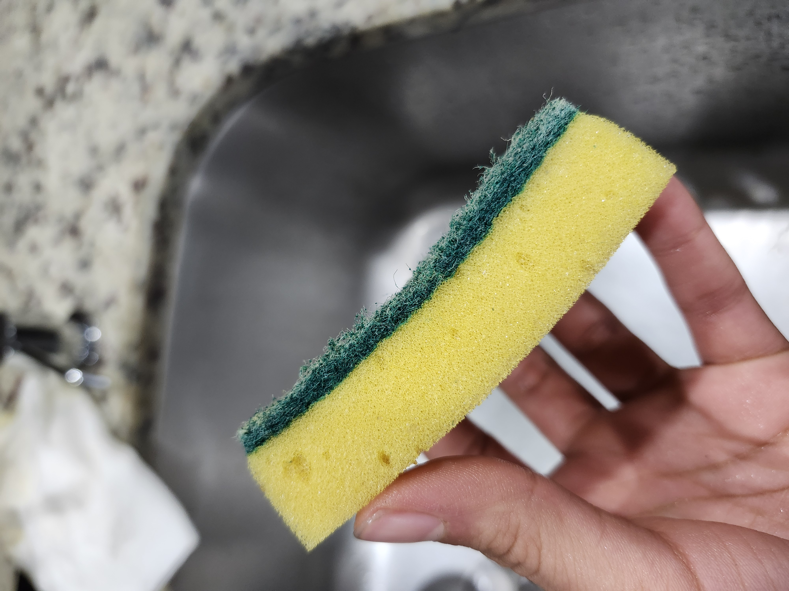
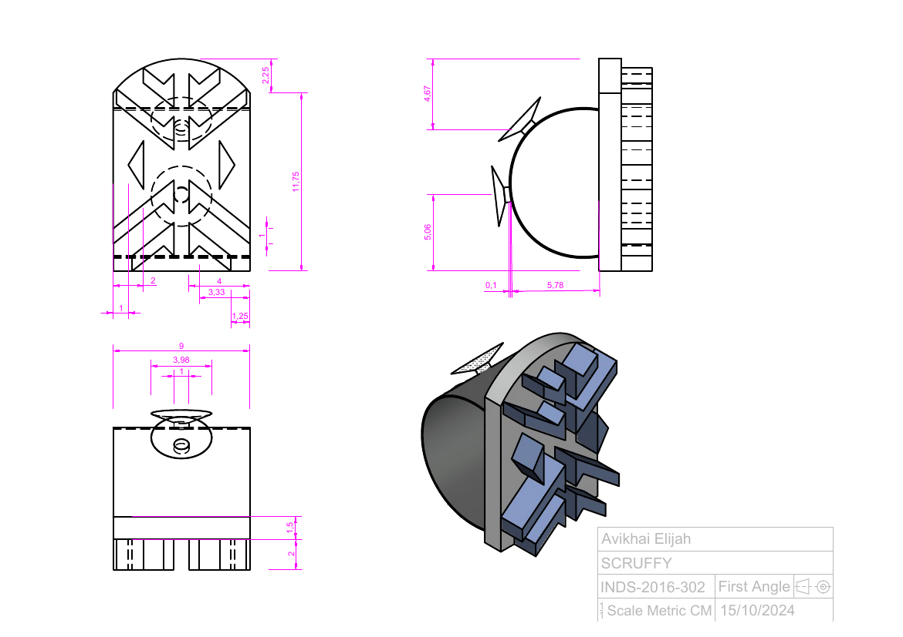
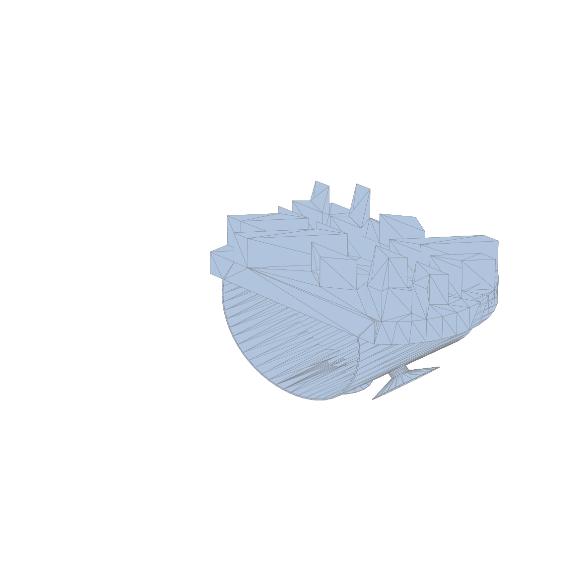

The Problem
Shadowing a peer's dishwashing routine, I surfaced a specific frustration: the tools already on the market, sponges, brushes, soaps, gloves, rags, each solve one small piece of the job but don't work together, leaving gaps the user has to patch with improvised solutions. In his own words: "With all the products available, they seem to not work together and leave out steps of the cleaning process for me to find my own solutions."
My market scan reinforced the gap: steel wool scratches dishes and needs constant replacing, bristle brushes trap food particles between bristles, and reusable sponge alternatives solve the waste problem but come at a steep price. My resulting how-might-we: streamline dish cleaning using the products people already have, rather than adding a new one to the pile.
Process

SCAMPER ideation is where my concept actually turned: applying "put to another purpose" to a scrubbing brush shifted my idea from cleaning dishes directly to lengthening the life of the sponge already in use: "reduce the time it takes to clean dishes by improving the abrasiveness of the sponge," rather than replacing it.

From there, human-factors detailing shaped my final form: a perpendicular handle to reduce slipping, a bidirectional blade pattern that works on both the push and pull stroke, and a rounded brush side I added specifically to match the visual language of the dishware it's meant to clean. I developed the geometry in AutoCAD and worked it through an intermediate cardboard prototype before moving to final materials.

My final physical prototype combined a hard plastic body, silicone bristles, a water-resistant mesh top cover, and clear suction cups for countertop mounting. A before/after test I ran on a sponge demonstrated the resharpening effect directly, with an honest caveat I attached in the deck itself: "Results may vary, sponge used for demonstration was relatively new."
Solution


Outcome / Reflection
In my own written reflection, I named the real constraint the project ran into: "Silicone is a unique material and is expensive when producing a single model, so to find a material which could represent the attributes of the silicone was quite tough... I did develop my model building skills and developed workarounds." Looking back, I was specific about what I'd do differently: "If I were to have a second attempt I would try to do some material exploration to find alternatives or speak with shop technicians to see other options."